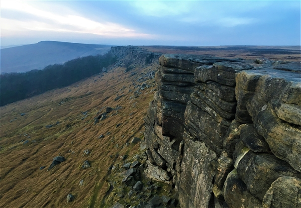
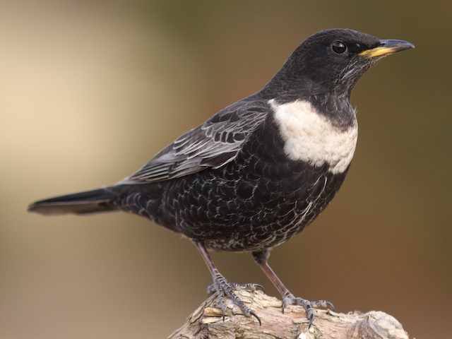

Peak District Climbing
Stanage Popular
Stanage Popular - the name says it all really. The most popular section of the most popular crag in the UK - there is almost always someone climbing here, whatever the weather and whatever the time of year. Of course this popularity is with good reason, an abundance of classics across the grades, on perfect rock and in a stunning setting; a crag to return to again and again. Visit on a cold crisp winter day, or linger on into the twilight of a late summer evening, come alone or with good friends; however you do it, there is a lifetime of memories waiting to be harvested from the Queen of Grit.
Crag features
The edge faces southwest and catches the sun from the mid-morning onwards. This means it can get very hot on calm summer days. It is exposed to any bad weather but dries quickly after rain although a few routes can be a bit damp and sandy. Winter days can be mint, if the sun is out and the wind is absent or an easterly. Midges can make it unbearable here on calm days from May to September.
Seasonal Restrictions
- Ring ouzels are nesting on Stanage, Burbage and Bamford this year.
- The nest sites change quickly and frequently as ring ouzels often have several broods each year with different nest sites for each brood.
- On site signage will be up around any of the nest sites where climbing may impact on the birds and this is always up to date and accurate.